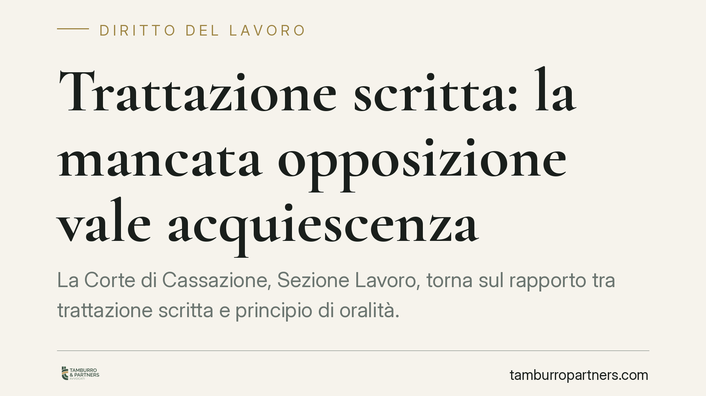

Trattazione scritta: la mancata opposizione vale acquiescenza
La Corte di Cassazione, Sezione Lavoro, torna sul rapporto tra trattazione scritta e principio di oralità. Il punto fermo: chi riceve il decreto di trattazione cartolare e non si oppone nei termini non può poi impugnare la decisione lamentando la mancata udienza. Una regola che impone attenzione nella gestione dei termini processuali, soprattutto nel rito del lavoro.

Il principio affermato
La trattazione scritta, introdotta in via stabile dall'art. 127-ter c.p.c., consente al giudice di sostituire l'udienza con lo scambio e il deposito di note scritte, assegnando alle parti un termine per il deposito e un termine anteriore per l'eventuale opposizione.
La Sezione Lavoro della Cassazione ha chiarito un profilo pratico rilevante: la parte che riceve il provvedimento con cui il giudice dispone la trattazione cartolare e non si oppone nel termine assegnato non può successivamente dolersi, in sede di impugnazione, della lesione del principio di oralità. La scelta di non attivarsi integra una forma di accettazione della modalità prescelta dal giudice.
*Nota sulla citazione: il presente contributo è redatto in attesa della pubblicazione del testo integrale della pronuncia. Gli estremi esatti (numero e anno) saranno indicati solo dopo verifica sulle banche dati ufficiali. Chi intenda far valere il principio in un atto è invitato a riscontrare preventivamente la fonte.*
Perché si parla di acquiescenza
Il richiamo all'acquiescenza (art. 329 c.p.c.) va inteso in senso funzionale, non letterale. L'art. 329 c.p.c. disciplina in senso proprio l'accettazione della sentenza o di suoi capi. Qui il meccanismo è analogo ma distinto: la parte, avendo a disposizione uno strumento specifico di reazione — l'opposizione alla trattazione scritta prevista dallo stesso art. 127-ter c.p.c. — e non avendolo esercitato, consuma la facoltà di contestare quella modalità.
In altri termini, non si tratta di acquiescenza a una statuizione, ma di una preclusione processuale derivante dal mancato tempestivo esercizio di un potere. La doglianza sulla violazione dell'oralità diventa inammissibile perché la parte avrebbe potuto, e non ha voluto, impedire la cartolarizzazione nel momento previsto dalla legge.
La specificità del rito del lavoro
Nel rito del lavoro la questione è più delicata, perché la struttura del processo (artt. 414 e seguenti c.p.c.) è costruita attorno a un'udienza di discussione che svolge una funzione centrale, non meramente formale.
Occorre distinguere tre fasi:
- Fase introduttiva: deposito del ricorso e della memoria difensiva, con il contenuto a pena di decadenza previsto dagli artt. 414 e 416 c.p.c.
- Fase istruttoria: assunzione delle prove, interrogatorio libero delle parti, tentativo di conciliazione, attività che presuppongono tendenzialmente la compresenza e l'oralità.
- Fase decisoria: discussione e lettura del dispositivo.
La compatibilità della trattazione scritta con questo impianto va valutata caso per caso. Dove l'udienza serve a raccogliere prove orali o a esperire il tentativo di conciliazione, la sostituzione con note scritte incontra limiti funzionali evidenti; dove invece residua la sola discussione finale, la cartolarizzazione è più agevolmente praticabile. Si tratta, allo stato, di un orientamento interpretativo in via di consolidamento: non esiste una norma che vieti in modo espresso la trattazione scritta in una specifica fase, ma la coerenza con la funzione dell'udienza lavoristica ne orienta l'applicazione.
Implicazioni pratiche
Per il lavoratore, il datore di lavoro e i difensori, la conseguenza è concreta: il provvedimento di trattazione scritta non è un atto da leggere con superficialità. Il termine per opporsi è breve e perentorio nei suoi effetti preclusivi. Lasciarlo decorrere significa rinunciare a sollevare, in appello o in Cassazione, qualsiasi censura sulla mancata udienza.
Questo vale a maggior ragione nel contenzioso di lavoro, dove l'oralità può incidere sulla formazione della prova e sull'esito della causa.
Cosa fare in concreto
- Verificare subito il decreto di trattazione scritta: individuare con precisione il termine per l'opposizione e quello per il deposito delle note.
- Valutare la fase processuale in corso: se sono necessarie prove orali, interrogatori o il tentativo di conciliazione, considerare l'opposizione per preservare l'udienza.
- Formalizzare l'opposizione per iscritto e nei termini, motivandola in relazione alle esigenze istruttorie o difensive del procedimento.
- Documentare la scelta processuale nel fascicolo, così da ricostruire con chiarezza le ragioni dell'eventuale adesione o opposizione.
- In caso di dubbio sugli estremi di una pronuncia richiamata in un atto, verificare sempre numero e anno sulle banche dati ufficiali prima del deposito.
Conclusione
Il messaggio operativo è netto: il silenzio, nel processo, non è neutro. Di fronte alla trattazione scritta la parte è chiamata a decidere, e la decisione va presa entro i termini. Consigliamo di trattare ogni decreto di cartolarizzazione come un adempimento a termine, valutandone l'impatto sulla strategia difensiva complessiva.
Ogni storia di lavoro ha i suoi tempi.
Se gestisci HR e vuoi un confronto su contenzioso, ispezioni o licenziamenti, scrivi allo studio. Ti rispondiamo entro un giorno lavorativo.